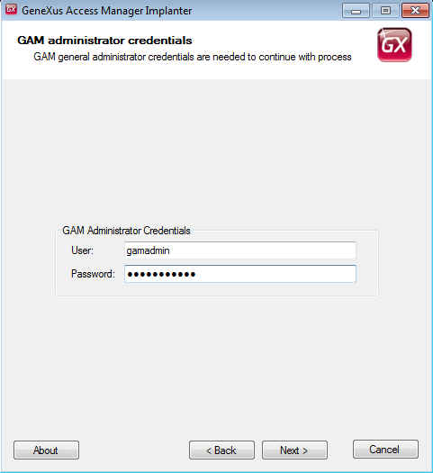
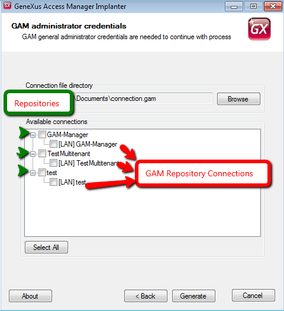

GAM Deploy Tool : Creating connection.gam file (GeneXus 17 Upgrade 4 or prior)
One of the purposes of GAMDeployTool is to create the connection.gam file (needed to connect to the GAM Repositories).
Each Repository of GAM may have n GAM Repository Connections which are defined for each Repository in the GAM database.
The connection.gam file includes the connection information for each Repository you want to connect to. The connection information included in this file has to exist in GAM database (it should have been created previously using the GAM API).
So, by using GAMDeployTool, the entries in connection.gam file are added depending on the selection of the user (who can select among the existing GAM Repository Connections of each Repository).
The tool is for use of administrators of GAM Manager Repository (eg: gamadmin user).
How to execute GAMDeployTool in a standalone mode:
1. Execute GamDeployTool.exe.
2. Select the operation you want to perform, in this case "Generate Connection File".

Figure 1.
3. Enter the necessary data to connect to the GAM database.
By now, the tool uses ADO to connect to the database, so you need the corresponding ADO client of the DBMS you want to connect to.

Figure 2.
4. Enter your admininstrator credentials (administrators of GAM Manager Repository).
The only users who are allowed to execute this tool are the administrators of GAM Manager Repository (eg: "gamadmin" user). If you try to connect with another user, an error will be thrown : "GAM: Unknown user".

Figure 3.
5. In the following window you will be displayed all the Repositories found in the GAM database, and the available connections for each of them.
In this step you are asked to select the path where connection.gam will be generated, and the connections which will be included in the connection.gam file.
You are shown a tree structure with parents and their children, where each parent is the Repository, and its children are all the available GAM Repository Connections of the Repository (existing in the database).
The user can select the "GAM Repository Connections" which are going to be included in connection.gam file.

Figure 4.
6. Final Step: the file is generated in the location specified.

Figure 5.
Finally, the connection.gam obtained has to be copied to the web application. In case of Ruby or NET applications, copy it to the virtual directory, in case of JAVA copy it to the root of the webapp in the servlets server.
Note: This tool can be launched from GX IDE, by selecting GAM - Update Connection File option.